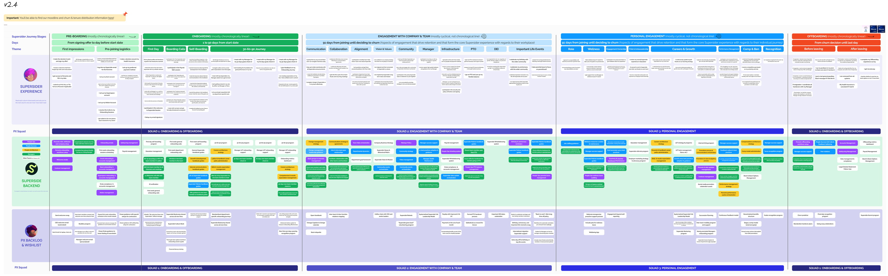
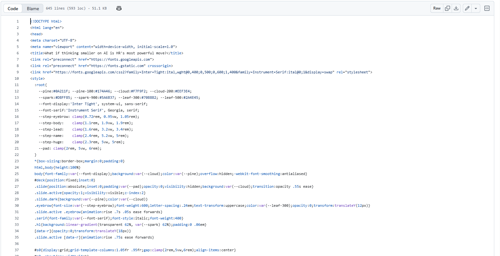
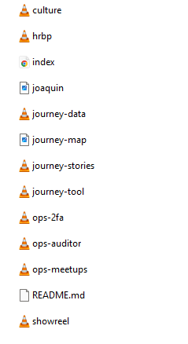

It feels like everyone has already automated their entire company, built 12 agents, and somehow trained their executive team on AI before breakfast.
So, are you already behind?
People who were brand new to Claude two weeks ago just found how fast you can actually build, and they're sharing amazing things online. It makes the gap feel far larger than it really is.
You beat AI paralysis by building one small, useful thing. Then you grow from there, quicker than you'd think.
And confidence surfaces, organically, from a safe and inspired environment.
We help in-house teams at brands like Intuit, Amazon, DoorDash, Figma, and Reddit scale on-brand creative that delivers, pairing world-class human talent with AI-first workflows and a Brand Brain that gets smarter with every project.
This meant AI was seen as an investment in our people, and not just their output. We upskilled our creatives, they became AI certified, grew more valuable, and were brought along to the future of the industry, running genuinely complex workflows and making mind-bending work for clients.
Talent reviews between the formal semi-annual cycles to see who needed general performance support.
Real investment in upskilling for those ready to grow.
Honest calls where growth did not come, always on overall performance, not just AI skills alone.
Then, whenever we hired replacements (for both regretted and non-regretted churn) and grew the team with new headcount, we hired for AI curiosity, adaptability, and product-mindedness, which, together with enablement, kept building our momentum toward AI-native creatives.
Traditional HR work you know well, pointed at one long-term goal: AI talent density.
That environment made rethinking how we work in HR feel natural, even without building complex creative workflows ourselves.
Spot the areas worth improving, from metrics and feedback.
Use first-principles thinking to form hypotheses, then test them and pinpoint the core issue through Socratic questioning or the 5 whys.
Build minimum lovable products, then iterate, iterate, iterate.
A lightweight framework, separate from everyone's day-to-day, just for running the experiments.
For us, that became Claude Cowork, though plenty of the early experiments ran on ChatGPT. Find what fits you, then go deep.
AI-first is not a switch you flip. It's a muscle you build.
Artifacts let you vibe-code a rough idea into something people can actually click and use.
Get AI to write the Apps Scripts that quietly run your repetitive workflows.
You'll spot both of these in the experiments ahead.
Giving the whole Supersider experience a single, living map.
Every month they stay, they renew. Every resignation is a cancellation. That experience is a product, and our job is to grow its lifetime value: help people grow further, stay longer, and ramp faster.
We gave Claude deep context on all our people programs and built a skill that had it act as an HR consultant, iterating with us toward a fully representative map, from the moment someone signs their offer to the day they leave.

The Supersider Journey Map: the experience people see on top, the programs and squads that power it beneath.
With Claude, we turned the map into something leaders actually want to open.
And our own People team, non-engineers, vibe-coded the whole thing in plain language, building and iterating fast.
We measure the key moments, sometimes with survey questions, but often through proxies like town hall attendance, PTO usage, internal ticketing timings, and more.
AI helped us code Apps Scripts that automatically pull HRIS data via Personio's flexible custom APIs and refresh these dashboards, so maintenance is minimal and the team can spend its time digging into the actual trends.
But these giant sheets weren't landing with leaders the way we hoped, so we needed a more effective way to show it.
We used Claude to combine our own insights with the patterns it spotted, then to quickly code a customized HTML dashboard for each department, surfacing the trends that matter and turning them into a cohesive story that grabs stakeholders and gets them to sponsor and drive change.
As Superside grew, our People Ops and Talent teams set out to scale impact without scaling headcount. So they built a stack of internal tools that let small teams operate far beyond their size.
From quiet background automations to the live market intelligence behind our outbound hiring, code that makes a real difference.
These are just a few examples.
We are fully remote, with Supersiders in 70+ countries and no offices, but we still want to incentivize real human connection. We pay Supersiders who meet in person for the first time in a year, as long as they live in different countries and post a photo of the meetup in a Slack channel.
The team used AI to build an Apps Script that auto-extracts every meetup post into a sheet, pairs everyone in the message, checks each pair against the policy, and, when eligible, prepares the monthly reimbursement summary for payroll. Fully automatic. The team just reviews the flags.
People Ops are the custodians of our people data: 850 profiles and dozens of attributes, spread across Personio, Superspace, Slack, and Google Groups. The catch is that the "correct" state doesn't live in any system, it lives in human judgment against criteria sheets. So auditing it was manual, and a full pass took the better part of a year, often stale before it finished.
So they built an auditor that checks every person against those criteria and logs only the discrepancies. It runs on Claude in Cowork: Opus does the judgment, deterministic Python matches all 850, and it learns from accepted exceptions. The whole company is now audited every two weeks, not once a year.
Before a search, our talent partners had to stitch two things together by hand: market research across Glassdoor, LinkedIn, and comp surveys, one company at a time, and a separate pull from Personio (our HRIS) and Lever (our ATS) to see where our best hires actually came from. This process was always manual, and led to inconsistencies in our outbound strategy.
So we wired a live market dataset: a group of target companies with instability signals cross-checked against layoffs.fyi, tons of business news sites, Glassdoor, company newsrooms, SEC filings, and more. Now Claude cross-references where we actually hire from against the live market in one step: sharper targeting, an early read on which companies are in motion, and a better ability to help talent in those companies find longer-term stability.
A Slack channel even flags a target company the moment it shows a new instability signal, so the team hears it automatically.
The ops bets ran behind the scenes. These point outward, at every Supersider instead of just our own team.
AI in the flow of work: an advisor anyone can ask, recognition in Slack, and culture you can click through.
The know-how exists, years of it, but it's scattered across countless Notion pages and best-practice docs that managers rarely find in the moment they actually need them.
A one-click Claude plugin, thoroughly trained on our policies, processes, and years of HRBP experience, shaped with pilot groups to nail the consultative tone Supersiders wanted and kept inside our HR AI policy guardrails.
Its 10 skills cover every moment of the journey, from onboarding to PIPs, change management, PTO and comp strategy, even walking someone through a performance review.
The Asana MCP lets it file People Ops tickets, and the Personio MCP means it instantly knows who it's talking to, IC or manager, their team, and their comp and performance history. Next up, Slack-native, plus proactive reach-outs and flags.
A Slack bot that brings key metric updates to where people already work, and auto-celebrates wins. It turns recognition and streaks into something visible and a little addictive, momentum you can actually see.
We trained our leaders on The Culture Map by Erin Meyer. With 85%+ of Supersiders reporting to a manager who doesn't share their nationality, it is a great framework for setting cross-cultural relationships up for success.
But it didn't fully land as a book or a deck. So we turned it into a tool, a culture map people click through instead of read. That's toolification: make it interactive, and suddenly people engage with what they used to skip.
Everything you saw started as a tiny bet against a specific problem. And almost every time, we were surprised how fast we went from an idea to a usable version, often in under a week, sometimes a single hackathon afternoon.
That builds confidence quickly. You get bolder than you expected, iterating, trying new angles, stacking on complexity. It gets a little addictive.
None of it needed engineers, all of it started small, and some, like the first cut of the Supersider journey, flopped on delivery and needed a rethink to truly land.
Some AI feels genuinely magical, some is expensive overkill, and you quickly learn how to tell them apart. For example, one (frankly unnecessary) experimental Asana AI summary step in our ticketing flow burned the whole company's Asana token budget in three weeks.
Use the free tokens already sitting in your tools, your HRIS, your CRM, your performance system, before reaching for the big models. These tools often have surprisingly good purpose-built AI solutions that can help with many workflows. For example, Notion AI redesigned all of our handbook pages to look amazing without us spending a single Claude token.
Not every flow needs an LLM. Often AI just helps you build the logic and guardrails, then you package that into a script that scales far past the tokens you started with. Our meetup-pairing bot, for one, runs with no model at all. Save the models for where you truly need them.
It was vulnerable to share a lot of this. Putting it together, I kept thinking: what if someone here is doing some of these ten times better? Probably. But that shouldn't discourage you.
There's always someone with a cleverer approach, something that feels leagues ahead. Let it teach you, not freeze you. Only you know your company's real context, and only you can build something truly fit for it.
The real shift is trying the thing you assumed needed a new headcount, six months, and two new tools, and finding you can build it yourself, with your own team. The time to build is now!
No PowerPoint. No Google Slides. Just an HTML artifact with some media, vibe-coded and shipped to GitHub.

